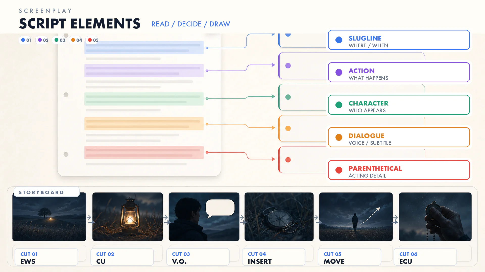
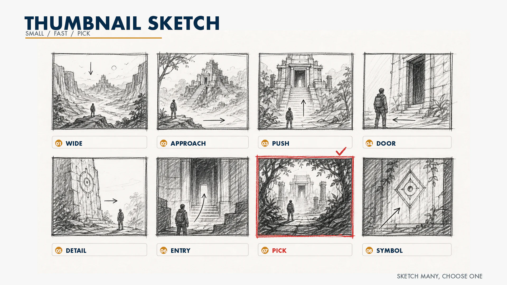
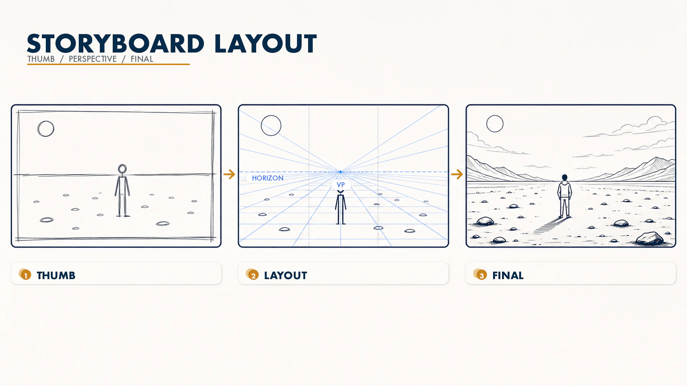
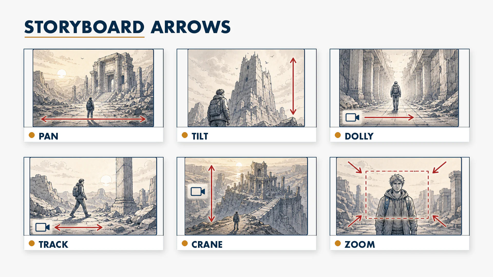
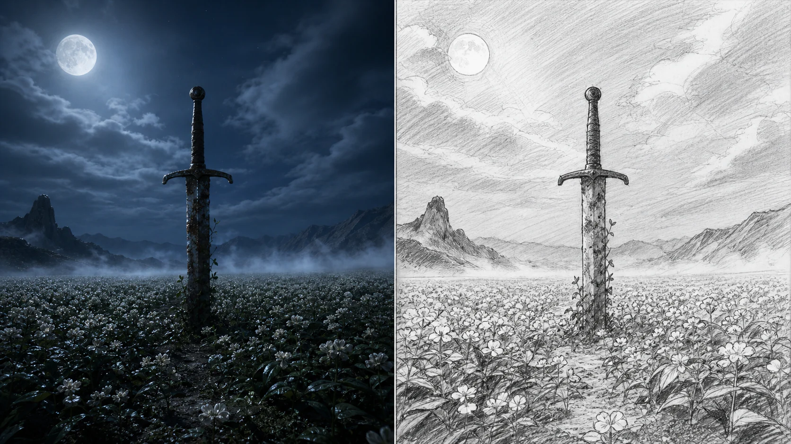
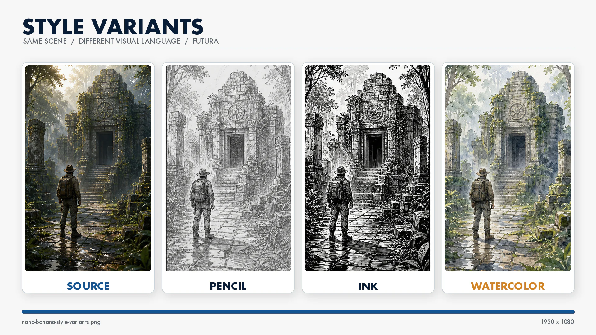
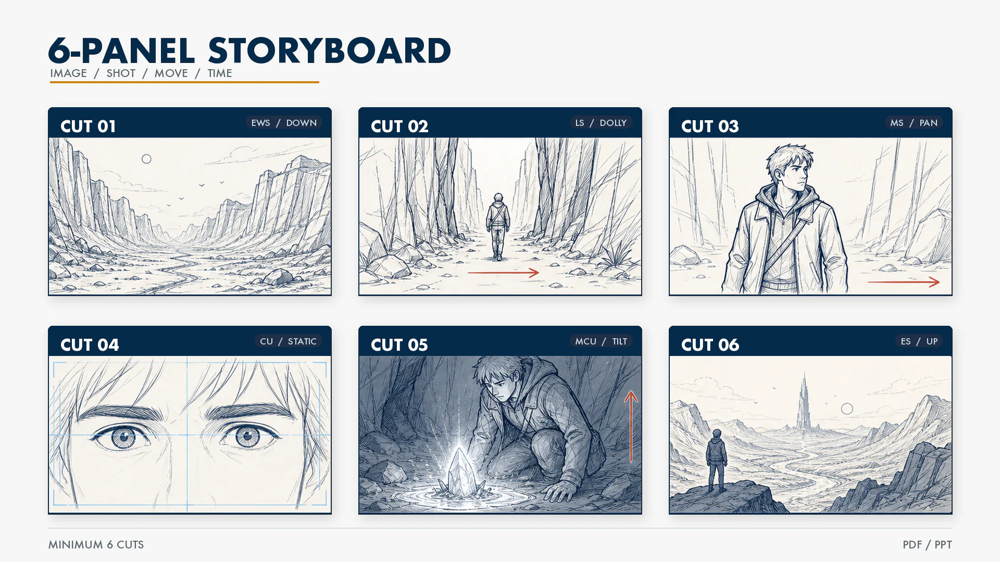

7주차 2교시 — 스토리보드 구성 요소와 AI 활용 (학생용)
관련 문서
| 관계 | 문서 |
|---|---|
| 강의 계획서 | 강의계획서: Game Engine II |
| 강의 아웃라인 | 7주차 아웃라인 |
| 이전 교시 | 7주차 1교시 핸드아웃 |
- 각본의 5요소를 식별할 수 있다
- 스토리보드 구성 요소와 제작 단계를 이해할 수 있다
- UE5 스크린샷과 AI 보조 도구를 활용해 스토리보드 제작 흐름을 설계할 수 있다
2교시 — 스토리보드 구성 요소와 AI 활용 데모
복습 연결
1교시에서 샷 사이즈 10종, 카메라 무빙 6종을 배웠습니다. 실제로 영상을 만들기 전에, 이 샷과 무빙을 종이 위에 기록하는 과정이 필요합니다. 그것이 스토리보드입니다.
스토리보드에는 그림만 있는 것이 아닙니다. 이 장면이 어디인지, 누가 무엇을 하는지, 카메라가 어떻게 움직이는지가 모두 적혀 있습니다. 이를 적으려면 먼저 각본을 읽을 줄 알아야 합니다.
각본 5요소
각본의 기본 구조
스토리보드를 그리려면, 먼저 '무엇을 그릴지'를 결정해야 합니다. 그 정보가 각본에 있습니다.
각본은 다섯 가지 요소로 구성되어 있습니다. 소설과 다른 점은, 각본은 '화면에 보이는 것'만 쓴다는 것입니다. 인물의 속마음 같은 것은 쓰지 않습니다. 카메라에 찍히는 것만 기술합니다.

| 요소 | 영어 | 역할 | 스토리보드에서의 활용 |
|---|---|---|---|
| 표제 | Slugline | 장소와 시간 | 배경 설정 → 어떤 환경을 그릴지 |
| 해설 | Action | 화면에 보이는 행동/상황 | 그림의 내용 → 무엇을 그릴지 |
| 인물 | Character | 누가 등장하는지 | 캐릭터 배치 → 누구를 그릴지 |
| 대사 | Dialogue | 무슨 말을 하는지 | 표정·제스처 힌트 + 자막 배치 |
| 지문 | Parenthetical | 연기 지시 | 인물의 감정·동작 디테일 |
다섯 개를 모두 외울 필요는 없습니다. 핵심은 세 개입니다. 표제로 '어디서', 해설로 '무슨 일이', 대사로 '무엇이라고 하는지'. 이 세 요소만 추출하면 스토리보드를 그릴 수 있습니다.
1. 표제 (Slugline) — "어디서, 언제"
각 장면 맨 위에 나오는 한 줄입니다. 형식이 정해져 있습니다.
| 형식 | 예시 |
|---|---|
S#번호. 장소 (시간) | S#1. 들판 (밤) |
| S#3. 카페 내부 (낮) | |
| S#12. 해안 절벽 (석양) |
장소와 시간만 봐도 스토리보드의 배경이 결정됩니다. '들판, 밤'이면 어두운 달빛 아래 넓은 풍경을 그려야 하고, '카페 내부, 낮'이면 실내에 자연광이 들어오는 장면이 됩니다.
2. 해설 (Action) — "무엇이 보이는가"
화면에 보이는 모든 것을 묘사하는 부분입니다. 영어로는 Action이라고 하며, 항상 현재 시제로 씁니다.
| 소설 (쓰면 안 되는 것) | 각본 해설 (이렇게 씀) |
|---|---|
| "그는 슬픈 기억을 떠올리며 걷고 있었다" | "남자가 천천히 걷는다. 고개를 숙이고 있다." |
| "그녀의 마음은 두근거렸다" | "여자가 문 앞에서 멈춘다. 손이 떨린다." |
소설은 감정을 직접 씁니다. 각본은 '카메라에 보이는 것'만 씁니다. '슬프다'는 쓰지 않고, '고개를 숙이고 있다'라고 쓰는 것입니다.
스토리보드에서는 해설을 가장 많이 참고합니다. 해설에 쓰인 행동과 상황이 곧 그림의 내용이 되기 때문입니다.
3. 대사 (Dialogue) — "무엇이라고 하는가"
인물이 하는 말입니다. 인물 이름 아래에 들여쓰기로 적혀 있습니다.
스토리보드에서 대사 자체를 적기도 하지만, 더 중요한 것은 대사에서 감정 힌트를 읽는 것입니다.
| 대사 | 스토리보드에서 읽어낼 것 |
|---|---|
| "도망쳐!!" | 인물 표정 = 공포/긴박, 입을 크게 벌림 |
| "...알겠습니다." | 인물 표정 = 체념/슬픔, 고개 숙임 |
| (속삭이듯) "여기야..." | 인물 자세 = 몸을 낮춤, 카메라 = CU로 가까이 |
같은 '알겠습니다'라도, 지문에 '(분노를 참으며)'가 붙으면 표정이 달라집니다. 그것이 지문(Parenthetical)의 역할입니다. 배우의 연기 방향을 잡아주는 것입니다.
4. 인물 (Character) + 5. 지문 (Parenthetical)
인물은 대사 위에 이름으로 표시됩니다. 이름 옆에 괄호가 붙기도 합니다.
| 표기 | 의미 |
|---|---|
| 삼신(E) | E = Echo. 화면에 안 나오고 목소리만 (나레이션) |
| 민수(V.O.) | V.O. = Voice Over. 다른 장면 위에 목소리가 깔림 |
| 영희(O.S.) | O.S. = Off Screen. 화면 밖에서 소리만 들림 |
지문은 대사 바로 위에 괄호로 적혀 있습니다. '(떨리는 목소리로)', '(웃으며)' 같은 것입니다. 스토리보드에서 인물의 표정이나 동작 디테일을 정할 때 참고합니다.
정리하면, 각본의 5요소에서 스토리보드로 가는 흐름은 다음과 같습니다.
| 각본 요소 | 스토리보드에서 결정하는 것 |
|---|---|
| 표제 → | 배경 (장소, 시간, 분위기) |
| 해설 → | 그림 내용 (무엇이 보이는지) + 샷 사이즈 힌트 |
| 인물 → | 캐릭터 배치 (누가 어디에) |
| 대사 → | 자막/나레이션 + 표정 힌트 |
| 지문 → | 연기 디테일 (동작, 감정) |
도깨비 각본 분석
실제 각본을 보면서 연습해보겠습니다. 도깨비 1화 첫 장면입니다.
S#1. 들판 (밤)
인적 끊긴 들판에 끝없이 펼쳐진 메밀꽃밭.
찬 달빛 받은 흰 메밀꽃 처연하다.
흔들리는 메밀꽃밭 한 가운데 장검 한 자루 적막하게 꽂혀 있다.
녹슬고 무뎌진 칼날과 이끼 낀 손잡이가 세월의 흔적 고스란히 담고 있다.
그 위로,
삼신(E) 사람의 손때나 피가 묻은 물건에 염원이 깃들면..
도깨비가 된단다..
숱한 전장에서 수천의 피를 묻힌 검이
제 주인의 피까지 묻혔으니 오죽했을까..
그때 어딘가에서 날아온 흰나비 한 마리,
검 손잡이 위를 맴돌다 사뿐히 앉는다.
그 순간, 웅- 웅- 검이 울기 시작하더니
점점 이글거리는 푸른 불꽃으로 화하는 검!위 각본에서 5요소를 식별하면 다음과 같습니다.
- 표제: 맨 위 'S#1. 들판 (밤)'. S#1은 씬 넘버 1번, 장소는 들판, 시간은 밤입니다.
- 해설: '인적 끊긴 들판에 끝없이 펼쳐진 메밀꽃밭'부터 이어지는 묘사 전체입니다. 화면에 보이는 것들을 설명하고 있습니다.
- 인물: '삼신(E)'입니다. (E)는 'Echo', 즉 목소리만 나오는 것입니다. 화면에 보이지 않고 나레이션으로만 들립니다.
- 대사: '사람의 손때나 피가 묻은 물건에...' 이 부분이 삼신의 대사입니다.
- 지문: 이 각본에는 명시적으로 나오지 않았지만, 다른 장면에서 '(떨리는 목소리로)' 같은 것이 붙으면 그것이 지문입니다.
이 각본을 스토리보드로 변환하면 다음과 같습니다.
| 각본 정보 | 스토리보드 결정 |
|---|---|
| 표제: 들판, 밤 | 배경 = 달빛 아래 메밀꽃밭 |
| 해설: '끝없이 펼쳐진' | 첫 컷 = EWS (넓게) |
| 해설: '장검 한 자루 꽂혀 있다' | 두 번째 컷 = CU (검 클로즈업) |
| 인물: 삼신(E) | 화면에 인물 없음, 나레이션만 |
| 해설: '푸른 불꽃으로 화하는 검' | 세 번째 컷 = ECU (불꽃 디테일) + Dolly In |
이렇게 각본의 각 줄이 스토리보드의 각 컷으로 변환됩니다. 각본 → 샷 사이즈 결정 → 카메라 무빙 결정 → 스토리보드의 흐름입니다.
스토리보드 제작 프로세스
영상: 스토리보드란 무엇인가
영상: 먼저 3분짜리 개요 영상을 봅니다.
스토리보드의 기본 개념과 실제 제작 과정을 보여주는 영상입니다. 스토리보드를 만드는 과정은 크게 세 단계로 나뉩니다.
제작 3단계
1. 썸네일 스케치

우표 크기로 아주 작게, 아주 빠르게 그립니다. 한 장에 5초 정도입니다. 이때는 디테일 없이 구도만 잡습니다.
프로들도 이 단계에서는 동그라미와 네모만 그립니다. 사람은 막대기 인간입니다. 핵심은 '화면 안에 무엇이 어디에 있는지'만 정하는 것입니다. 샷 하나당 여러 개를 그려보고, 그중에 가장 나은 것을 고릅니다.
2. 레이아웃

썸네일에서 골라낸 컷을 좀 더 크게 다시 그립니다. 이때 투시 보조선을 넣어서 공간감을 잡습니다. 여기서부터 카메라 앵글이 확정됩니다. 하이 앵글인지, 로우 앵글인지, 아이레벨인지 결정합니다.
3. 완성 스토리보드
레이아웃에 디테일을 넣고, 카메라 지시사항을 적습니다. 이것이 최종본입니다.
Mad Max: Fury Road는 각본보다 스토리보드를 먼저 만들었습니다. 감독 조지 밀러가 3,500장의 스토리보드를 먼저 완성하고, 그것을 바탕으로 대본을 나중에 썼습니다. 최종 영화의 거의 모든 샷이 스토리보드와 일치했습니다. 그만큼 스토리보드가 영상 제작에서 중요한 도구입니다.
카메라 지시 표기법

스토리보드에 카메라 움직임을 표시하는 약속된 화살표가 있습니다. 1교시에서 배운 6가지 무빙을 다음과 같이 표기합니다.
| 무빙 | 표기 위치 | 화살표 모양 |
|---|---|---|
| Pan | 프레임 하단 | 수평 화살표, 방향 표시 |
| Tilt | 프레임 측면 | 수직 화살표, 방향 표시 |
| Dolly In/Out | 카메라 아이콘에서 | 카메라→피사체 방향 화살표 |
| Track | 카메라 아이콘 아래 | 카메라 자체의 좌우 화살표 |
| Crane | 카메라 아이콘 옆 | 카메라 자체의 상하 화살표 |
| Zoom In/Out | 프레임 안 | 동심원 또는 점선 프레임 |
Pan 화살표는 프레임 안에 그리고, Track 화살표는 카메라 아이콘에 그립니다. Pan은 고개를 돌리는 것이고, Track은 카메라가 직접 옆으로 이동하는 것입니다.
각 컷 아래에는 보통 다음과 같은 정보를 적습니다. 중간고사 제출물에서도 이 형식을 따르면 됩니다.
| 항목 | 예시 |
|---|---|
| 씬/컷 번호 | S#1 - Cut 3 |
| 샷 사이즈 | CU |
| 카메라 무빙 | Dolly In (slow) |
| 상황 설명 | 검에 나비가 앉자 푸른 불꽃이 피어오른다 |
| 대사/사운드 | 삼신(E): "도깨비가 된단다..." |
| 시간 | 4초 |
봉준호 사례 — 프로 스토리보드의 실전
영상: 5분짜리 분석 영상 — 스토리보드와 실제 영화 장면이 나란히 비교됩니다.
봉준호 감독은 모든 장면을 직접 스토리보드로 그리는 것으로 유명합니다. 기생충은 스토리보드가 그래픽 노블로 출간될 정도입니다.
봉준호 감독의 스토리보드에서 배울 점은 세 가지입니다.
| 포인트 | 설명 |
|---|---|
| 1. 단순화 | 스토리보드에서 어떤 요소를 빼는 건 있어도, 새로 추가하는 건 거의 없음 |
| 2. 의도의 명확성 | 그림이 정교하지는 않지만, 카메라 위치·앵글·무빙이 한눈에 보임 |
| 3. 연기 여지 | 카메라와 구도만 확정하고, 배우의 연기는 현장에서 |
드로잉 완성도 자체가 핵심은 아닙니다. 봉준호 감독의 스토리보드도 세부 묘사보다 의도가 명확한 점이 중요합니다. 어디서 찍고, 무엇을 보여주고, 카메라가 어떻게 움직이는지가 모두 들어 있습니다. 중간고사에서도 정교하게 그리는 것이 아니라, 의도가 보이는 스토리보드를 만드는 것이 중요합니다.
스토리보드를 더 공부하고 싶다면 아래 무료 자료를 참고하십시오.
- RocketJump Film School — 스토리보드 입문 (https://www.youtube.com/watch?v=RQsvhq28sOI)
- Pixar in a Box — Khan Academy에서 제공하는 픽사 공식 스토리텔링 강좌 (https://www.khanacademy.org/humanities/hass-storytelling/storytelling-pixar-in-a-box)
AI 활용 데모: Nano Banana 2
소개
드로잉에 익숙하지 않은 점이 걱정인 경우, UE5 레벨의 스크린샷을 AI로 스케치풍이나 만화풍으로 변환하는 방법도 있습니다.
Nano Banana 2는 ComfyUI에서 사용할 수 있는 Google 계열 이미지 생성/편집 워크플로우입니다.
Nano Banana 2는 중간고사 제출 조건이 아닙니다. '이런 것도 가능하다' 수준의 보조 도구이며, 사용을 원하는 경우에만 활용하면 됩니다.
데모 시연
데모에서는 준비한 UE5 스크린샷을 원본 이미지로 사용합니다.
ComfyUI 시연 순서:
- ComfyUI를 열고 캔버스에서 "Nano Banana 2" 노드를 검색합니다
- UE5에서 캡처한 스크린샷을 이미지 입력 노드에 드래그합니다
- 프롬프트를 작성합니다 (아래 구조 참고)
- Generate를 누르고 결과를 확인합니다
프롬프트를 체계적으로 작성하면 원하는 결과를 일관되게 얻을 수 있습니다.
프롬프트 7블록 구조:
| 블록 | 역할 | 예시 |
|---|---|---|
| B1. Style | 그림 스타일 | storyboard panel, rough pencil sketch, black and white |
| B2. Shot | 샷 사이즈 + 앵글 | extreme wide shot, eye level angle |
| B3. Subject | 주인공/핵심 피사체 | a lone warrior in dark armor, standing still |
| B4. Scene | 장면 묘사 | ancient sword stuck in the ground, white buckwheat field |
| B5. Composition | 구도 + 분위기 | centered composition, eerie atmosphere, light fog |
| B6. Lighting | 조명 | cold moonlight from above, soft shadows |
| B7. Color & Time | 색감 + 시간대 | desaturated blue tones, midnight |
모두 다 채울 필요는 없습니다. 최소한 B1(스타일)과 B4(장면 묘사)만 있어도 동작합니다. 나머지는 더 정교한 결과를 원할 때 추가하면 됩니다.
실제 프롬프트 예시 — 도깨비 S#1 기준:
storyboard panel, rough pencil sketch, black and white,
extreme wide shot, slightly low angle,
moonlit buckwheat field stretching endlessly,
an ancient rusted sword standing alone in the center of the field,
centered composition, ethereal and melancholic atmosphere,
cold moonlight from above, soft ambient glow,
desaturated blue-white tones, midnight이것은 도깨비 각본 S#1의 첫 컷입니다. 각본에서 추출한 정보가 그대로 프롬프트에 들어갑니다.
| 각본 정보 | 프롬프트 블록 |
|---|---|
| 들판, 밤 → | B7: midnight |
| 메밀꽃밭, 끝없이 → | B4: buckwheat field stretching endlessly |
| 장검 한 자루 → | B4: ancient rusted sword standing alone |
| 달빛, 처연하다 → | B6: cold moonlight + B5: melancholic |
| EWS로 넓게 → | B2: extreme wide shot |
이렇게 각본 → 스토리보드 정보 → 프롬프트로 자연스럽게 연결됩니다.
변환 결과는 원본 스크린샷과 나란히 비교합니다. 구도가 유지되는지, 스토리보드처럼 읽히는지, 컷의 의도가 더 명확해졌는지를 확인하면 됩니다. B1(스타일)만 바꿔도 분위기가 완전히 달라집니다.

| B1 스타일 변경 | 결과 |
|---|---|
rough pencil sketch, black and white | 흑백 연필 스케치풍 |
comic book panel, bold ink lines, cel shading | 만화/코믹 스타일 |
watercolor illustration, soft edges | 수채화풍 |

같은 스타일을 여러 컷에 적용하면 스토리보드의 톤을 맞추는 데 도움이 됩니다.
주의사항 + 대안
| 주의사항 | 설명 |
|---|---|
| AI는 보조 도구 | 스토리보드의 핵심은 기획력. AI로 이미지를 정교하게 만들어도 샷 구성이 불명확하면 의미가 약함 |
| AI 사용 시 표기 | 중간고사에 AI 이미지를 쓰면, 해당 컷 아래에 도구명+프롬프트를 간략히 적어야 함 |
| 환경 | ComfyUI 설치가 필요. GPU가 없는 PC에서는 느릴 수 있음 |
ComfyUI가 어려운 경우, 더 간단한 대안도 있습니다.
| 대안 | 방법 |
|---|---|
| UE5 스크린샷 직접 활용 (가장 추천) | 캡처한 이미지를 그대로 스토리보드 컷으로 사용 + 위에 텍스트/화살표 추가 |
| 무료 드로잉 앱 | Krita나 메디방에서 스크린샷 위에 트레이싱 |
| PPT/키노트 | 스크린샷 위에 도형과 텍스트로 카메라 지시 표기 |
어떤 방법이든 1교시에 배운 샷 사이즈와 카메라 무빙이 스토리보드에 들어가야 합니다.
실습 안내 + 정리
3교시 실습 안내
실습 목표:
| 항목 | 내용 |
|---|---|
| 목표 | 4컷 이상 스토리보드 초안 |
| 소재 | 자기 UE5 레벨 (6주차 과제 레벨 또는 새로 만든 레벨) |
| 제출 | 3교시 끝나기 전 현재 상태를 LMS에 업로드 |
| 도구 | UE5 스크린샷 + PPT 템플릿 (LMS에서 다운로드) |
LMS에서 스토리보드 템플릿을 다운로드하십시오. PPT와 구글슬라이드 두 가지가 있습니다.

템플릿에 이미 칸이 나눠져 있습니다. 그림 넣는 칸, 샷 사이즈 적는 칸, 카메라 무빙 적는 칸, 설명 적는 칸입니다.
추천 순서:
- 6주차에 만든 컨셉 문서를 열어서 테마 확인
- UE5에서 자기 레벨을 열고, 카메라 앵글을 잡아서 스크린샷 4~6장 캡처
- 스크린샷을 템플릿에 배치
- 각 컷에 샷 사이즈, 카메라 무빙, 상황 설명 작성
정리
2교시 요약:
| 번호 | 요약 |
|---|---|
| 1 | 각본 5요소(표제·해설·인물·대사·지문)에서 스토리보드에 그릴 내용을 추출한다 |
| 2 | 스토리보드 = 그림 + 샷 사이즈 + 카메라 무빙 화살표 + 상황 설명 |